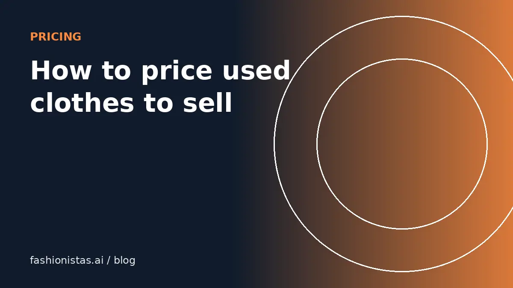

How to price used clothes so they actually sell

Most items that don't sell are priced from hope, not evidence. The fix is a repeatable method: look at what identical items actually sold for, adjust for your item's condition, add the app's fee, and leave a little room for offers. Here is that method in detail, plus the mistakes that keep good clothes sitting in a closet.
Start with sold prices, not asking prices
An asking price is what someone hopes to get. A sold price is what a buyer actually paid. Only the second one tells you the market.
Every big app lets you see sold items:
- eBay: search, then turn on the "Sold items" filter. Sold prices show in green. This is the largest public record of resale prices anywhere.
- Poshmark: search, open Filter, and set Availability to "Sold items".
- Mercari: search, then filter by Status: Sold.
- Depop: search and look for the "Sold" badge in results; you can also filter to show sold items.
Look for the same brand, same item type, and ideally the same style name or line. "Madewell jeans" is too broad. "Madewell Perfect Vintage Jean" is useful. Collect five to ten recent sales from the last 90 days. Fewer than that and you are guessing; much older and the market may have moved.
Adjust for condition honestly
Your comps will include items in different states. Sort them roughly into three piles and compare against the pile that matches yours.
| Condition | What it means | Typical adjustment vs good used comps |
|---|---|---|
| New with tags | Never worn, original tags attached | Top of the sold range |
| Excellent used | Worn a few times, no flaws you can see | Middle to upper range |
| Good used | Light wear, slight fading or pilling | Middle to lower range |
| Fair | Visible flaws, stains, repairs | Bottom of the range or below |
Be stricter than you think you need to be. Buyers who receive an item in worse shape than described open returns, leave bad reviews, and cost you shipping both ways. Describing a small flaw and pricing for it is almost always cheaper than hiding it. Photograph it clearly, too. Our photo guide shows how.
Adjust for size, season and demand
Two identical jackets can sell for very different prices. Things that move a price up or down:
- Size: extended sizes and very common sizes (women's M, men's L) usually sell fastest. Unusual sizes can take longer, so price slightly lower if you want speed.
- Season: coats and boots sell better from September through January; linen, sandals and swimwear peak in spring. Listing out of season is fine, but expect a slower sale or price a touch lower.
- Color: neutral and current colors often outsell unusual ones within the same item.
- Completeness: original belt, dust bag, box, spare buttons and receipts all add value, especially for designer goods.
- Measurements in the listing: not a price factor by themselves, but listings with measurements answer fit questions and convert better.
If your comps show an item sells quickly at $40 but slowly at $55, decide which matters more to you. A fast sale at $40 frees up space and money to source the next piece.
Add fees, then add offer room
Once you know the market price, work out what you will actually keep. Each app takes a different cut, so the same sale price means a different payout. Our fee comparison lists every current rate, last checked Oct 2026.
Then decide whether you are listing to accept offers. On Poshmark, Mercari and Depop, most buyers send offers, and many expect 10% to 20% off. A common approach:
- Find your target sale price from comps.
- Set the list price 15% to 25% above it.
- Accept offers at or above your target; counter anything below.
- If there is no interest after one to two weeks, drop the price by about 10%. On Poshmark and Mercari, a price drop notifies people who liked the item.
On Vinted and eBay Buy It Now, fewer buyers haggle, so you can list closer to your target.
Pricing designer and vintage pieces
Higher-value items deserve more research, not less.
For designer goods, comps must match the exact model, size, material and hardware. A Louis Vuitton Speedy 25 and Speedy 30 are different markets. Check whether the app offers authentication; Poshmark authenticates eligible items sold for $500 or more, and eBay's Authenticity Guarantee covers qualifying handbags, sneakers, watches and jewelry. Buyers pay more when they feel safe. If you are unsure whether your piece is genuine, our authentication guide is a starting point, and paid authentication services exist for anything expensive.
For vintage, the era and the details matter: a single-stitch 1980s band tee and a 2010s reprint of the same design are not the same item. Learn to date vintage clothing before you price it.
Common pricing mistakes
- Pricing what you paid. Retail price is history. A $200 dress from two seasons ago sells for what used ones sell for today.
- Using asking prices as comps. Listings that have sat for six months at $90 tell you $90 is too high.
- One price for every app. Fees differ by up to 20 points. Adjust per shop.
- Never dropping. If an item has had views and likes but no sale in a month, the price is the message.
- Underpricing out of fear. Listing a $60 item at $15 attracts resellers, not grateful buyers. Trust the comps.
- Ignoring shipping. Heavy items like boots, coats and denim cost more to ship. If you offer free shipping, build it into the price. See how to ship clothes cheaply.
A quick worked example
Say you have a pair of Everlane wide-leg trousers in excellent used condition, size 6.
- eBay sold search for the style name shows eight sales in 90 days between $28 and $45, most around $35.
- Your pair is excellent with no flaws, so you aim for $36.
- On Poshmark, to keep about $29 you need a $36 sale. You list at $44 to leave room for offers.
- On Mercari, the same $36 target leaves $32.40 after the 10% fee. You list at $40.
- On Depop, processing is about $1.64 on $36, so you list at $39.
When you list the same item through the fashionistas.ai listing tool, it suggests a price from the item details and shows the take-home on each app, which saves step 3 to step 5.
FAQ
How much should I charge for used clothes?
Charge what identical items actually sold for recently, adjusted for your item's condition. Look up sold listings on eBay, Poshmark or Mercari from the last 90 days and aim for the middle of the range.
What percentage of retail should I sell used clothes for?
There is no fixed percentage. Mall brands often sell for 20% to 40% of retail used, while in-demand designer and vintage items can sell near or above retail. Sold comps are more reliable than any rule of thumb.
Should I price higher to leave room for offers?
On Poshmark, Mercari and Depop, yes. Listing 15% to 25% above your target lets you accept typical offers and still hit your number.
How often should I lower my price?
If an item gets views but no sale in one to two weeks, a drop of about 10% is reasonable. On Poshmark and Mercari a price drop notifies people who liked the item.
Do I include shipping in the price?
Only if you offer free shipping. Most apps let the buyer pay shipping. If you cover it, add the label cost to your price, and remember eBay and Mercari charge their fee on buyer-paid shipping too.